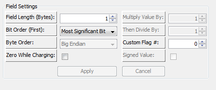

Field Length: This is the length (in bytes) of the given field. This can be either 1 or 2 bytes.
Bit Order: The bit order for a given field can be either Least Significant Bit (LSB) or Most Significant Bit (MSB) first. In MSB mode, the furthest right bit is the least significant value. In LSB mode, the furthest right bit is the most significant value.
Byte Order: The byte order for a field can either be Little Endian or Big Endian. This determines which byte (the highest / biggest or lowest / littlest) comes sequentially first. (Example: Assume we have a field with a value of 0x1234. Little Endian representation would be "0x34' "0x12' whereas Big Endian representation would be "0x12' "0x34').
Zero While Charging: If checked, this will set the field's value to zero (0) while the Is-Charging signal is active. This can be useful for applications that require specific messages to be present at all times, however the data is ignored while charging.
Maximum Value: This is the maximum value that the field can be. If the field is signed, then this can be a maximum of 32,767. Otheriwse it can be 65,535.
Minimum Value: This is the minimum value that the field can be. If the field is signed, then this can be a maximum of 32,767. Otheriwse it can be 65,535.
Signed Value: If checked, this indicates whether the field returns a signed value or not. A signed value can go from -32,767 to 32,767 whereas an unsigned value can go from 0 to 65,535.
Field Arithmetic: There are three different values for performing arithmetic operations on a given field, Multiplier, Divider and Offset. These operations are performed in the following order: Field = ((value * multiplier) / divider) + offset)
| < Message Specific Options | Enable CANBUS Display Module > |